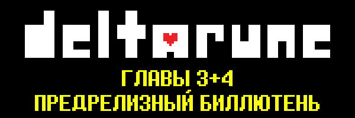
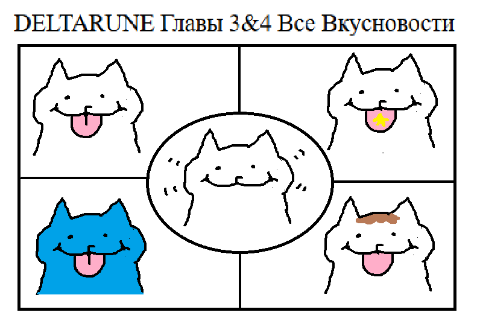

(Арт от Темми)
1-4 главы DELTARUNE вот вот выйдут на ПК, Мак, Свитч, Плейстейшн 4, and Плейстейшн 5! Заглядывайте на deltarune.com чтобы знать наверняка когда игра выйдет.
И ещё она выйдет в полночь на Нинтендо Свитч 2 в ваших регионах.

По поводу СПОЙЛЕРОВ у меня есть два совета...
- Если вы очень боитесь встретить спойлер, постарайтесь отказаться от социальных сетей или видеоплатформ, пока не наиграетесь. Из-за современных медиа-алгоритмов, если вы большой поклонник игры, то, скорее всего, в рекомендациях будут спойлеры, куда бы вы ни отправились...
- Если вы пользуетесь социальными сетями и знаете, что у вас есть подписчики, которые не хотели бы видеть спойлеров, думайте о том, что вы постите, что делаете.
Ничто из того, что я скажу, не остановит людей от попыток быть первыми, кто все покажет, поэтому, пожалуйста, просто делайте все возможное, чтобы защитить себя.
Просто будьте начеку. Еще до того, как игра выйдет в вашем регионе, новозеландцы, которые получат игру на три часа раньше, вероятно, придут прямо к вам домой и начнут приклеивать превью "Все боссы 3+4 глав Deltarune" к вашим окнам. (А может они уже...)
Тем не менее, пожалуйста, не торопитесь с прохождением игры. Просто расслабьтесь и наслаждайтесь игрой в своем собственном темпе. По крайней мере, лично я рекомендую делать перерывы между главами...!

|
Саундтрек будет доступен на Bandcamp и Steam. Он будет доступен и на других платформах, но не сразу после релиза. Я уверен, что вы сможете найти его через день - два.
Даже если вы играете на другой платформе, я рекомендую брать саундтрек в Steam. Я буду обновлять саундтрек каждый раз, когда выйдет новая глава, так что это действительно выгодная сделка.
Единственное что - если вы боитесь спойлеров, не читайте названия треков, пока не закончите игру.

Я уверен, что маловероятно, что кто-либо из десятков тысяч людей, играющих в мою игру более сотен тысяч часов подряд, обнаружит какие-либо баги.
Но как бы то ни было...
Если игра выйдет сломается или если вы не можете пройти дальше, пожалуйста, напишите нам по электронной почте [email protected] чтобы сообщить о любых проблемах. И наблюдайте за страницей ЧаВо(Часто задаваемые Вопросы) в ближайшие недели, так как мы будем публиковать информацию о всех известных проблемах в верхней части страницы.
На прошлой неделе мы внесли несколько незначительных изменений в последнюю минуту, чтобы в последний раз подправить игру перед релизом.
Поскольку для обновлений для платформ Nintendo требуются разные временные рамки, на Nintendo Switch и Nintendo Switch 2 эти изменения изначально не будут внесены. Поэтому в этой версии могут быть некоторые супер незначительные различия. (например, инструкции по действию, приведенные в главе 4, не будут отображаться, кое-какое необязательное событие может активироваться даже при непредвиденных обстоятельствах и т.д.)
Мы постараемся устранить любые проблемы, которые возникнут после релиза, как можно быстрее. Обновление Nintendo Switch и Nintendo Switch 2 займет несколько больше времени, нежели на других платформах, поэтому, пожалуйста, не ругайтесь.
На днях мы обновили раздел ЧаВо на сайте, добавив несколько новых вопросов, включая информацию о том, как импортировать сохраненные данные. Ищите вопросы с пометкой "NEW!" вот здесь https://deltarune.com/help/

За последние несколько лет я бесчисленное количество раз излагал свои мысли о них, о том, как, по моему мнению, они будут восприняты, о том, как они выглядят по сравнению с главами 1 и 2, о том, чего ожидать... но, знаете, все в порядке. Всё идет своим чередом. Вы сами сделаете все выводы.
Так что,
Если ты читаешь все это, позволь сказать -
Спасибо за твою поддержку.
Без таких людей, как ты, я бы никогда не смог воплотить эту игру в реальность.
Конечно, пути назад уже нет, я довершу игру, независимо от того, волнует ли она кого-то еще или нет...
Мне так понравилось делиться этим всем с тобой.
Так что спасибо.
Я надеюсь, ты хорошо проведешь время.